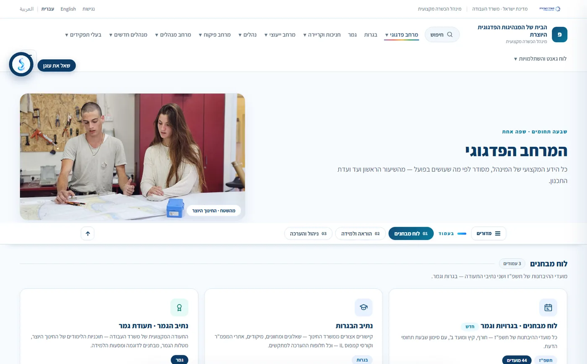
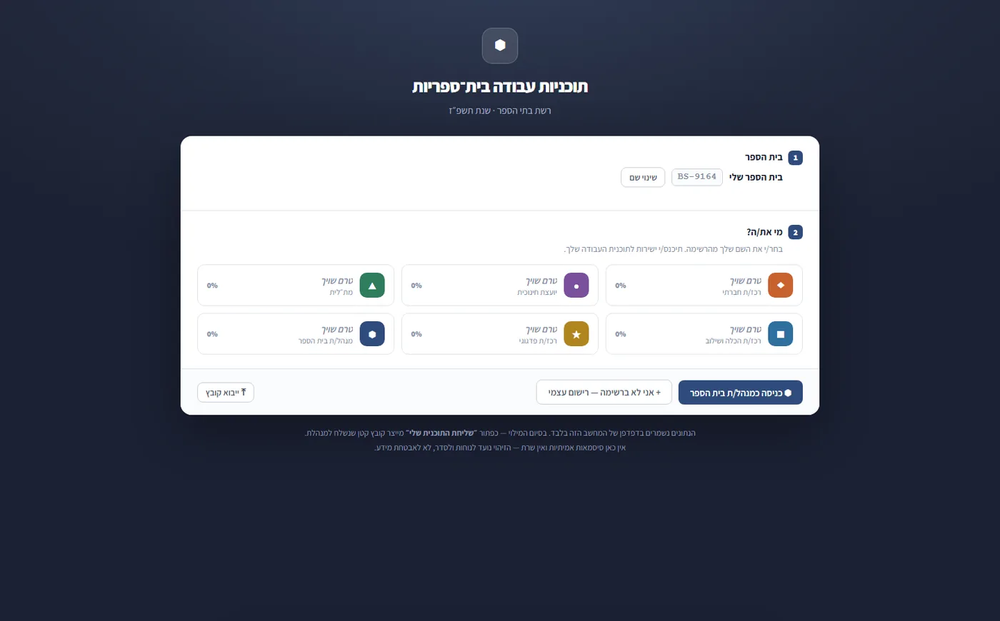

תוכן שאפשר למצוא
חיפוש חופשי על כל האתר, ניווט לפי תפקיד ולפי תחום דעת, וקיצורי דרך לפי מה שרוצים לקדם היום.
רוב האתרים הארגוניים הם חוברת שהודבקה לאינטרנט. אנחנו בונים אתרים שאנשים חוזרים אליהם כדי לעבוד: תוכן שמסודר לפי מה שעושים איתו, חיפוש שבאמת מוצא, כלים אינטראקטיביים בתוך העמוד, ונגישות מהיום הראשון.

הדוגמה: pedagogiamh.co.il — הבית של המנהיגות הפדגוגית היוצרת, מינהל הכשרה מקצועית · משרד העבודה
אתר לצוותי הוראה ולמנהלים ב־64 בתי ספר, כ־9,700 תלמידים. 123 עמודי תוכן שמסודרים לפי מה שאיש חינוך צריך לעשות היום — לא לפי מבנה הארגון.
חיפוש חופשי על כל האתר, ניווט לפי תפקיד ולפי תחום דעת, וקיצורי דרך לפי מה שרוצים לקדם היום.
לא רק לקרוא: בניית תוכנית עבודה שנתית, לוח מבחנים, טפסים ומחוללים — עובדים בתוך האתר עצמו.
עברית, ערבית ואנגלית, תפריט נגישות והצהרת נגישות — חלק מהבנייה, לא תוסף שמדביקים בסוף.
"שאל את עוגן" — עוזר שעונה על שאלות מתוך תוכן האתר, כדי שלא צריך לדעת מראש איפה הדבר נמצא.


נשמח לשמוע מה הארגון שלכם צריך, ולהראות איך אתר-שהוא-מערכת נראה אצלכם.
בואו נדבר